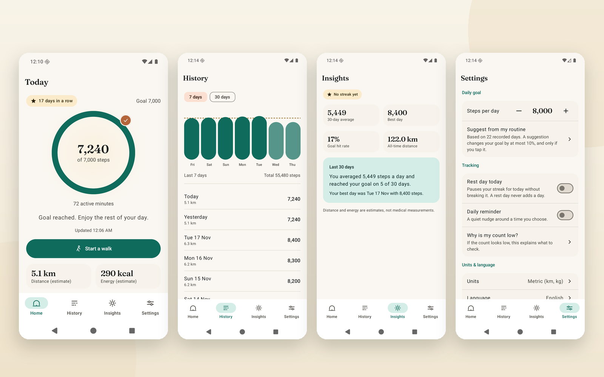
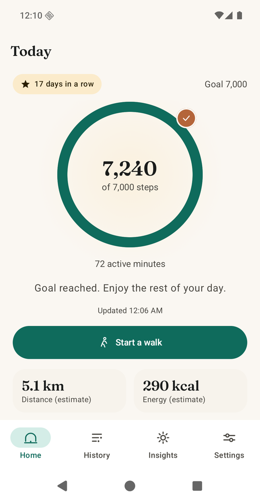
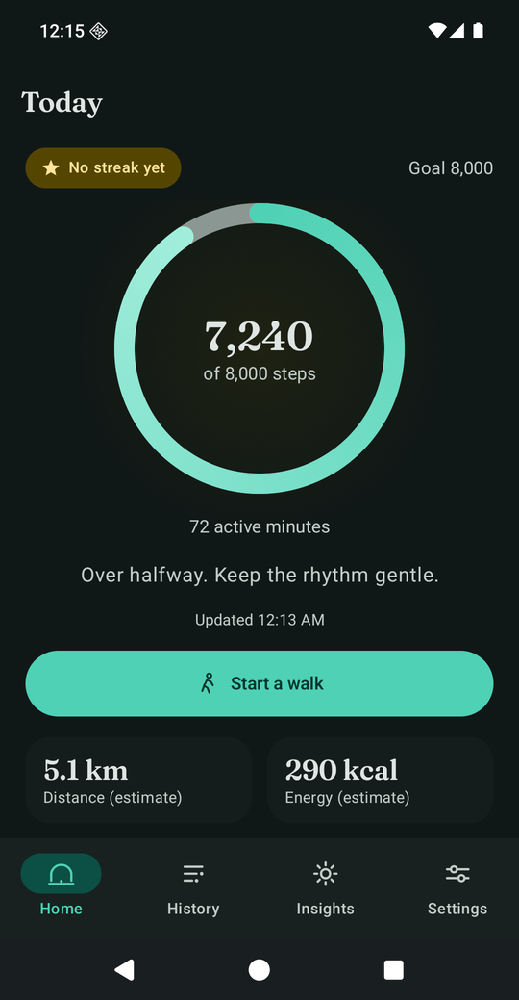
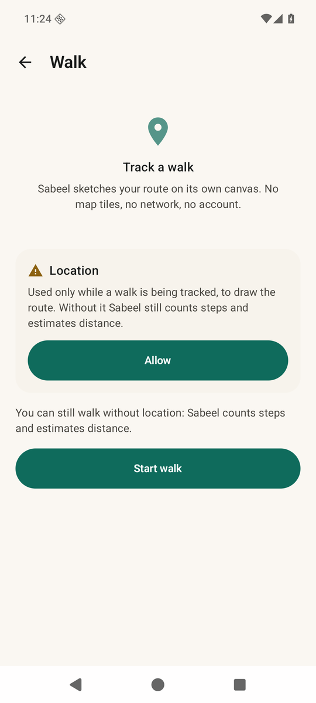

Offline by architecture
The merged manifest has no android.permission.INTERNET. That is not a toggle that can be switched back on by an update: there is no networking code and no server to talk to. Every step stays in private storage on the phone.
Sabeel سبيل offline step counter for Android
A calm step counter and walk tracker that works without a connection, an account or an advertising ID. Version 1.3 adds a real on/off switch for counting and custom walk or run sessions — and the app still cannot send your data anywhere.

Why Sabeel exists
Most step counters are free because your movement pays for them. Sabeel takes the opposite deal: it does less behind your back, and it says out loud what it cannot do.
The merged manifest has no android.permission.INTERNET. That is not a toggle that can be switched back on by an update: there is no networking code and no server to talk to. Every step stays in private storage on the phone.
No ad SDK, no analytics, no crash reporting, no sign-in. Nothing to opt out of, and no advertising ID to hand to anyone. The release build can be inspected; the dependency list is public.
If Android or a phone maker stops background counting, Sabeel records what happened at boot and shows it in Diagnostics. It never claims that counting “never stops”, because on Android that promise cannot be kept.
The whole interface ships in English and Arabic with a right-to-left layout. The Arabic strings are translated; a native-speaker review is still pending, and this site states that instead of hiding it.
What's in version 1.3
Everything below works without a connection. Nothing here quietly needs an account, a sync service or a network request.
Tap the ring on Home, the status pill beneath it, or the switch in Settings — they are the same persisted switch. If you turn counting off, it stays off after a restart.
A hardware step counter and a step detector run together. Health Connect can add a read-only, watch-synced floor, and a labelled accelerometer estimate fills only the part no measured source saw.
After a restart, Sabeel records the attempt — permissions, sensor, result, whether the service was alive after a check — and tries to resume counting. Diagnostics lists the last ten attempts and can share a text report with no location or place data.
Choose walk or run, an optional time, step, distance or place goal, and whether to draw a route. Pause freezes the session clock and steps without back-filling; midnight sessions are split into legs. One session at a time.
Save a place as a label, coordinates and radius — no address search, no geocoding, no map download. Save your usual session setup and start it in one tap.
A 7- or 30-day view with your goal line, the daily list and saved sessions; window averages, best day, goal-hit rate and total distance on Insights. Rest days pause a streak without breaking it.
A quiet WorkManager reminder at a time you choose, a notification when you reach the day's goal, and at most one recovery notice if counting could not restart after a boot.
Write daily totals as CSV, all sessions as CSV, or one session as GPX through Android's system file picker. Nothing is uploaded; the file goes only where you send it.
Read this before downloading
These limits are real. They are the price of an app that cannot phone home, and it is fairer to say them here than to bury them in a store listing.
Privacy
There is no account to create and no server holding a copy of your walks. Android cloud backup is off for Sabeel, so its data is not carried into a backup either. The hosted policy covers exactly what is stored, every permission and why it is asked, and how to delete everything.
The policy is published in English and Arabic on this same site. Health Connect is optional and read-only; the app never writes to it.
Screenshots
Real UI captures from release testing — not mockups, not device frames. The emulator-only “No step sensor” notice is hidden in the three Home shots; the note below explains why.






Emulator captures from release testing in November 2026. The API 36 ATD image has no hardware step sensor, so today's step values were injected through the debug build's step receiver. These are not a physical-device claim for v1.3, and screens may differ slightly in the next build. The “No step sensor” notice the emulator shows on Home has been hidden in the Home captures above; on a phone without that sensor the app does show it (unedited captures are in the README).
FAQ
No. The merged Android manifest has no INTERNET permission, and the app ships no networking, advertising or analytics code. Airplane mode changes nothing. The only time the phone goes online for Sabeel is when you choose to fetch an update from GitHub or a store — never from inside the app.
Not yet. Version 1.3.0 is built, signed and measured (2026-11-23), but nothing has been uploaded to Google Play and no approval is implied. The source code, APK and AAB are on GitHub.
No — and no Android app can. A force-stop stops counting until you reopen Sabeel; aggressive battery managers can also stop foreground services. Sabeel records each boot attempt and shows the result in Diagnostics instead of pretending the day is complete.
Location is optional and foreground-only. It is used only while a session screen is open, to draw a route on the app's own canvas — no map tiles and no address search. There is no background location permission. If you decline, a walk is still tracked by steps.
Activity recognition (to count steps), notifications (reminders and the ongoing tracking notice), optional foreground location for a route, and start-at-boot for reminders and counting. Health Connect is an optional, read-only extra. Data stays in the app's private storage, cloud backup is disabled, and Delete all data removes it.
Yes. It is licensed under Apache-2.0, has no ads and no in-app purchases, and the full source is public on GitHub — including the manifest that shows there is no INTERNET permission.
Not yet. The interface and this site are fully translated, but a native Arabic review has not happened; it is a launch precondition for the Arabic listing. If a phrase reads awkwardly, that feedback is genuinely useful.
Download
Built, signed and measured on 2026-11-23. The download lives on GitHub; there is no store listing yet.
The APK is signed with the project's upload key. After downloading, compare the file with the SHA-256 above using sha256sum.